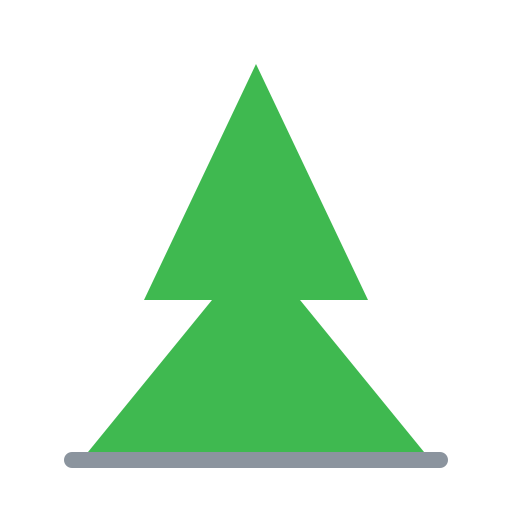
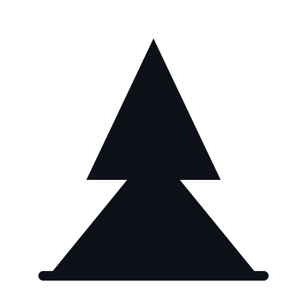
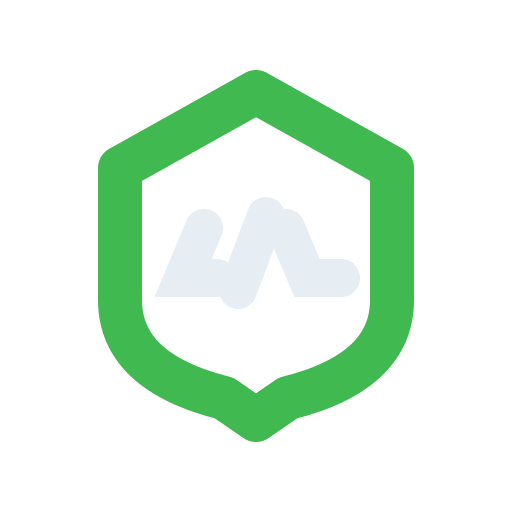
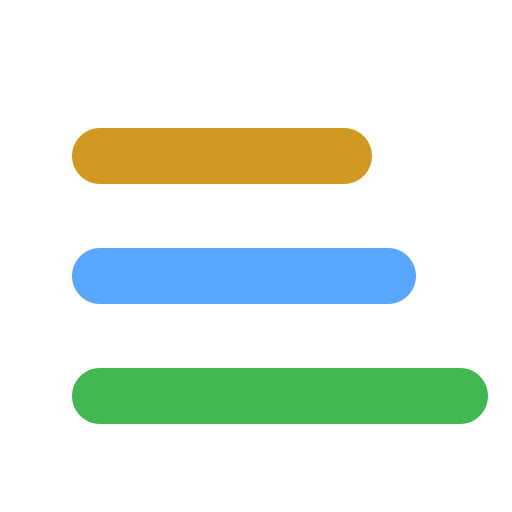

Conceito escolhido: cume. Silhueta de serra com linha de base, porque Monte Alto é bairro de Serra. Massa cheia, sem contorno — é o que continua legível a 40px na lista de contatos e a 32px em favicon.




O texto do lockup depende da Segoe UI instalada: onde essa fonte faltar, o nome muda de forma. O SVG converto para traço e o arquivo passa a ser idêntico em qualquer máquina.